<!--
    Copyright 2016 Jon Mason
	
	This file is part of Oubreak.

    Oubreak is free software: you can redistribute it and/or modify
    it under the terms of the GNU General Public License as published by
    the Free Software Foundation, either version 3 of the License, or
    (at your option) any later version.

    Oubreak is distributed in the hope that it will be useful,
    but WITHOUT ANY WARRANTY; without even the implied warranty of
    MERCHANTABILITY or FITNESS FOR A PARTICULAR PURPOSE.  See the
    GNU General Public License for more details.

    You should have received a copy of the GNU General Public License
    along with Oubreak.  If not, see <http://www.gnu.org/licenses/>.
-->

<div id="icons">
	<span><a href="#home" title="Home" ng-click="mainCtrl.checkLockOnClick('home')"></a></span>
	<span ng-repeat="(sectionId, section) in mainCtrl.sections" ng-class="{'highlighted': section.highlighted}"><a href="javascript: void(0)" ng-click="mainCtrl.checkLockOnClick(sectionId)" ng-class="{'locked': mainCtrl.locks[sectionId], 'active': currentSectionId === sectionId}" title="{{section.name}}"><span class="icon-text" ng-show="section.highlighted">{{section.name}} Unlocked!</span><span class="icon-image"></span></a></span>
</div>
